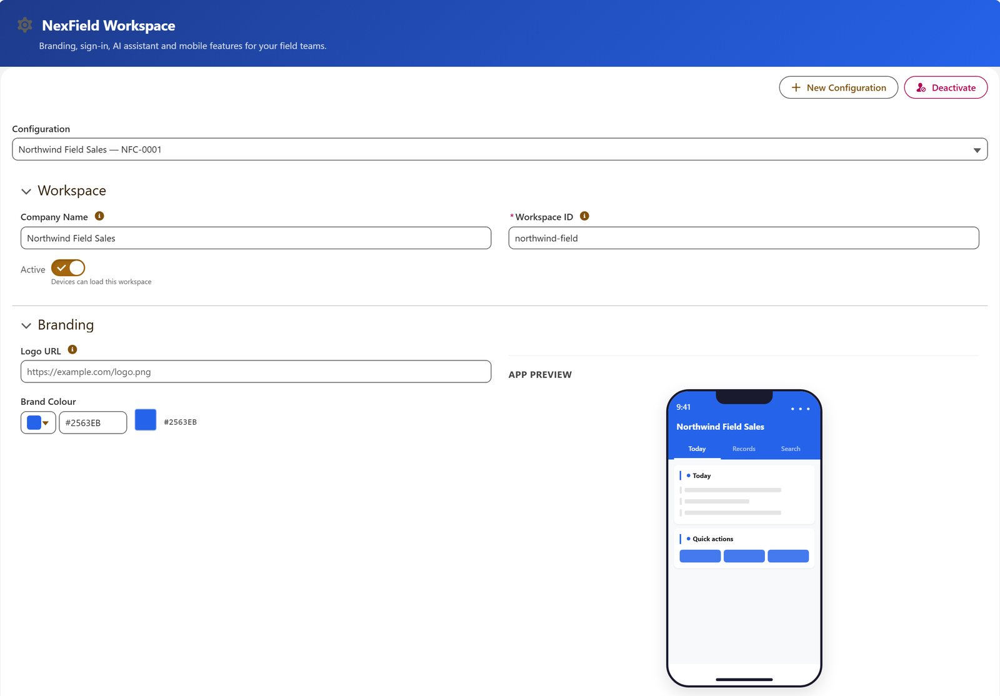
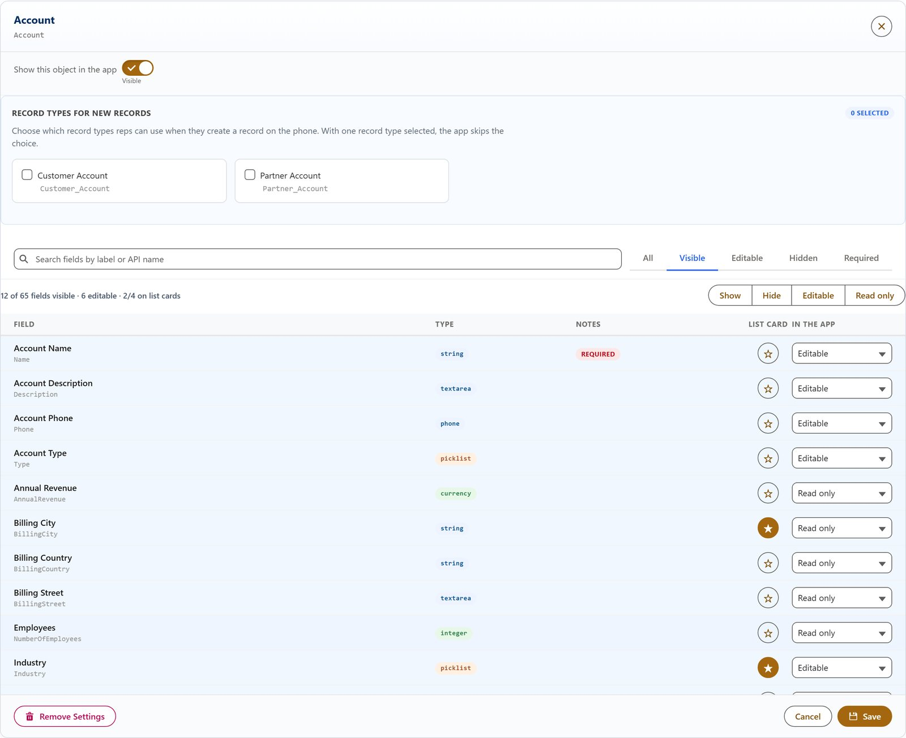
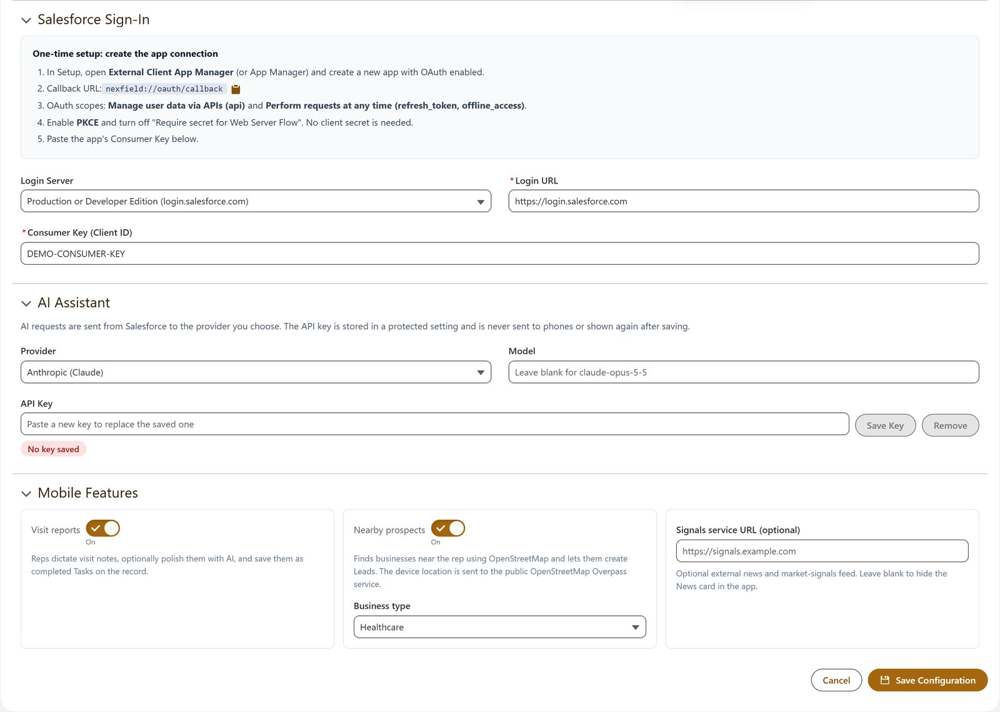
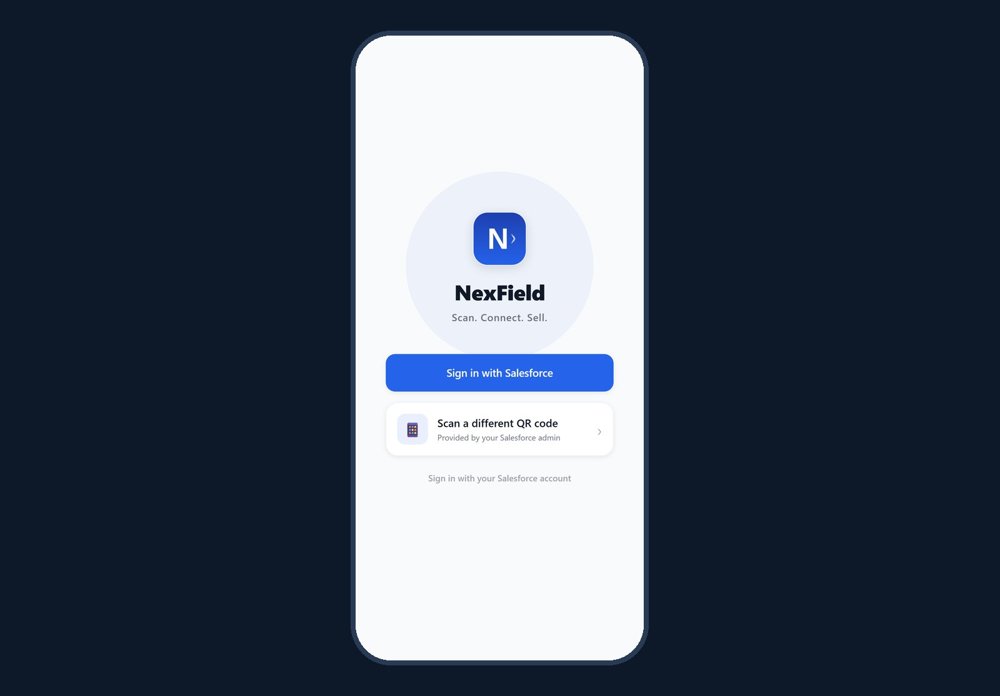
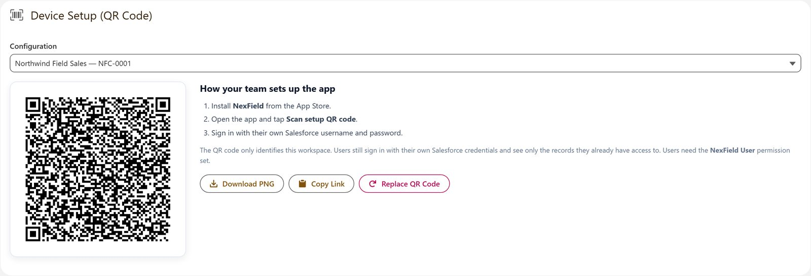
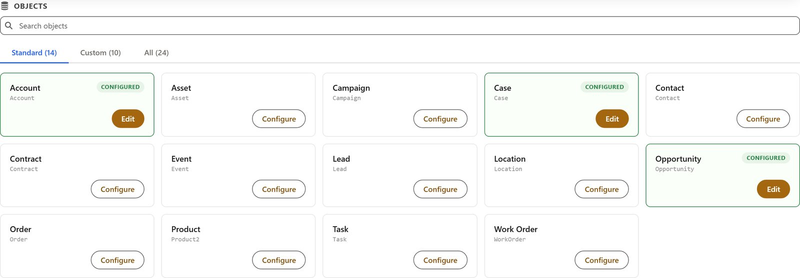

NexField.
A field app for Salesforce that admins configure in Salesforce.
What I set out to solve.
Field sales and service teams need their accounts, pipeline and follow-ups on the phone, but every company models Salesforce differently: some use a dozen standard objects, others hundreds of custom fields, record types and validation rules.
NexField lets a Salesforce admin decide what the app shows, without code and without a separate backend: objects, fields, list cards, record types, branding, AI provider and features. Reps scan a QR code and sign in with their own Salesforce account.
Constraints shape decisions.
How can one app serve both a five-person team and an enterprise org with 900 fields on Account, while keeping Salesforce security in charge and passing App Store and AppExchange security reviews?
Architecture, layer by layer.
Select a component to understand its responsibility. Simplified from the implementation; not a production infrastructure diagram.
Admin console
Three Lightning Web Components in a NexField app: workspace settings with a live phone preview, a per-field Hidden / Read only / Editable configurator with list-card fields and record types, and a QR code drawn locally in the browser. Admin writes require a custom permission and run in user mode.
Scale without noise.
Discovery uses deferred describes, so orgs with thousands of objects stay fast. Wide objects start lean, the configurator warns when a required field is not editable, and the app keeps list queries to a title and four summary fields while detail screens load the full record through the sObject resource.
Visit reports are saved as completed Tasks and nearby prospects come from OpenStreetMap by business category, so no custom fields are needed in the customer's org.
Salesforce stays in charge.
User-mode queries and DML, field stripping on admin saves, allowlisted fields, a custom permission for admin actions, no secrets in the configuration payload and AI keys in protected storage. 29 Apex tests cover 87–100 % of each class, and Salesforce Code Analyzer reports only documented false positives.
Captured in a Developer Edition org.
Fictitious demo data created by the seed script in the repository. The sign-in screen is rendered from the app's React Native code in a browser preview; device screenshots will follow the TestFlight release. Select an image to open it full size.






What the evidence supports.
The Salesforce package deploys and passes its tests in a Developer Edition org, and the iOS build is in TestFlight ahead of App Store submission. AppExchange listing follows a managed-package release and the Salesforce security review. Source code is private.